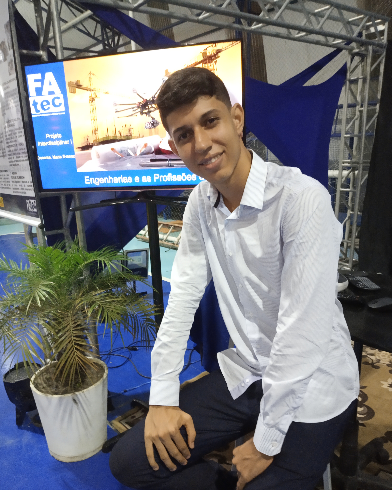

Sou Marcus Ribeiro, tenho 20 anos, me considero uma pessoa esforçada e pesquisador, que procura surpreender as pessoas de forma positiva através dos bons resultados, levando em conta a competência profissional. Como tantos outros jovens tenho sonhos, e objetivos, sempre busco meu crescimento pessoal e profissional. Cursei ensino médio Técnico de Informática e descobrir através do mesmo, a minha aptidão por engenharia mecânica, além de contar que, desde criança sempre tive a vontade de manusear máquinas e saber como as mesmas funcionavam, bem como o computadores,os sistemas e softwares. ingressasse no curso de engenharia mecânica. O qual estou no sexto semestre. E a cada dia estou convicto que estou no caminho certo e realmente engenharia é a minha paixão. O meu maior sonho é me tornar um engenheiro mecânico bem sucedido, inovador e atuante.
Esta página foi criada a fim de adquirir conhecimentos básicos e certificação na área de desenvolvimento web.
